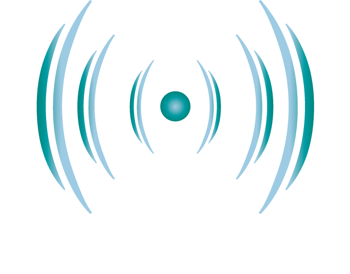

Tarea 02 - UACh
ACUS099
üè† Inicio
üéôÔ∏è Grabaciones Secas
üîä Respuestas al Impulso
üîÅ Audios Convolucionados
üì∏ Galer√≠a
Proyecto de Medición Acústica UACh
Bienvenido al informe interactivo.
üéôÔ∏è Grabaciones Secas
üîä Respuestas al Impulso
üîÅ Audios Convolucionados
üì∏ Galer√≠a Fotográfica
Próximamente...